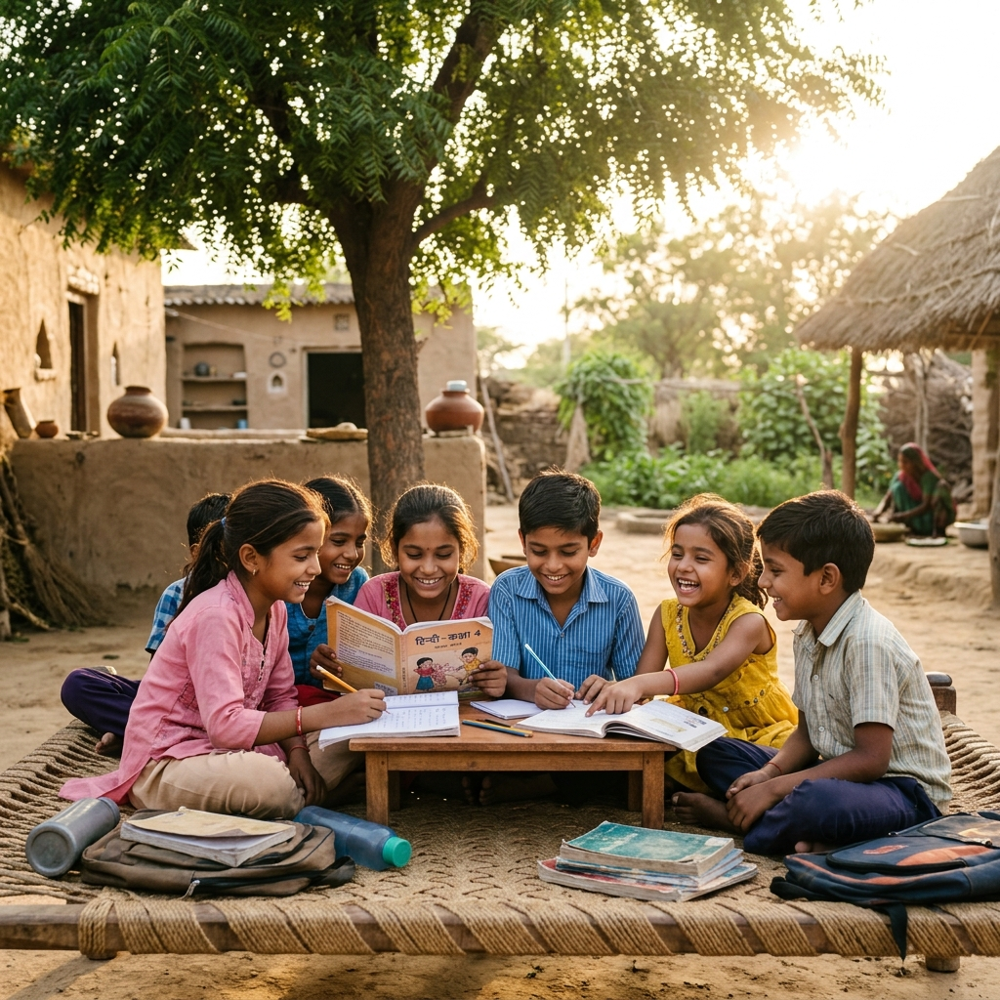

समर्पण सहयोग फाउंडेशन का प्रकल्प
शिक्षा
उज्ज्वल भविष्य हेतु
चिकित्सा
नि:शुल्क स्वास्थ्य सेवा
गोपनीयता
सम्मानपूर्वक व सुरक्षित
समर्पण सहयोग फाउंडेशन का एक प्रकल्प
जरूरतमंद जीवनों में आशा, विश्वास और नई रोशनी का सहयोग।
“अनुकम्पा” आर्थिक रूप से कमजोर एवं जरूरतमंद समाजजनों के लिए शिक्षा और चिकित्सा के क्षेत्र में सहयोग प्रदान करने का सेवा संकल्प है।
सेवा
सद्भावना
सहयोग
सबसे पहले समझें
क्या है “अनुकम्पा”?
“अनुकम्पा” समर्पण सहयोग फाउंडेशन का सेवा प्रकल्प है, जिसका मूल उद्देश्य आर्थिक रूप से कमजोर एवं जरूरतमंद समाजजनों को शिक्षा और चिकित्सा में गरिमापूर्ण सहायता देना है।
पूज्य श्रुतसंवेगी महाश्रमण श्री 108 आदित्यसागर जी मुनिराज की करुणा, सेवा भावना और समाज के प्रति समर्पण इस प्रकल्प का प्रेरणा स्रोत है।

हमारे मुख्य कार्य क्षेत्र
जहाँ सहयोग सबसे अधिक अर्थपूर्ण बनता है
शिक्षा सहयोग
आर्थिक रूप से कमजोर विद्यार्थियों की शिक्षा, पुस्तकें, वर्दी, छात्रवृत्ति और शैक्षणिक आवश्यकताओं में सहयोग।
चिकित्सा सहयोग
जरूरतमंद रोगियों के इलाज, दवाइयों, ऑपरेशन और अन्य चिकित्सा सुविधाओं में आर्थिक सहायता।
सम्मानजनक सहायता
जिन परिवारों को सहयोग दिया जाएगा, उनकी निजी जानकारी और सम्मान को पूर्ण गोपनीयता से सुरक्षित रखा जाएगा।
हमारा संकल्प
निस्वार्थ सेवा
करुणा और सम्मान
उज्ज्वल भविष्य
पारदर्शिता और मर्यादा
संस्था आय-व्यय का पारदर्शी लेखा-जोखा रखेगी और सहयोग राशि का उपयोग शिक्षा, चिकित्सा एवं जरूरतमंद समाजजनों की सेवा में ही किया जाएगा।
सहयोग की यात्रा
आपका योगदान कैसे सेवा बनता है
संकल्प
आप अपनी श्रद्धा और क्षमता के अनुसार सहयोग राशि चुनते हैं।
पारदर्शी उपयोग
राशि शिक्षा और चिकित्सा जैसे निर्धारित सेवा क्षेत्रों में उपयोग होती है।
गरिमामय सहायता
जरूरतमंद परिवारों तक सहयोग सम्मान और गोपनीयता के साथ पहुँचता है।
नई रोशनी
किसी विद्यार्थी या रोगी के जीवन में आशा का दीप जलता है।
सदस्यता पत्र
सहयोग श्रेणियाँ
अपनी श्रद्धा और क्षमता के अनुसार एक श्रेणी चुनकर अनुकम्पा परिवार से जुड़ें।
शिरोमणि संरक्षक
₹ 5,51,000/-परम संरक्षक
₹ 2,51,000/-संरक्षक
₹ 1,11,000/-सदस्य
₹ 11,000/-
मासिक सहयोग राशि सभी श्रेणियों के लिए: ₹ 1,000/- प्रतिमाह
नियम एवं निर्देश
विश्वास के साथ सहयोग
- यह सेवा अभियान पूज्य श्री 108 आदित्यसागर जी मुनिराज की प्रेरणा एवं निर्देशन में संचालित है।
- सहयोग राशि का उपयोग केवल शिक्षा, चिकित्सा एवं जरूरतमंद समाजजनों की सेवा हेतु किया जाएगा।
- सदस्य सेवा, सद्भावना, अनुशासन और जैन संस्कारों के अनुरूप आचरण बनाए रखें।
- संस्था का उपयोग व्यक्तिगत, राजनीतिक या व्यावसायिक लाभ हेतु नहीं किया जा सकेगा।
- प्रदान की गई राशि पर आयकर अधिनियम की धारा 80G के अंतर्गत कर छूट उपलब्ध रहेगी।
सहयोग एवं बैंक विवरण
संस्था का आधिकारिक बैंक खाता विवरण
आप अपनी सहयोग राशि सीधे Samarpan Sahayog Foundation के अधिकृत बैंक खाते में स्थानांतरित कर सकते हैं।
Account Name (संस्था का नाम)
Samarpan Sahayog Foundation
A/c Number (खाता संख्या)
50200112412254
IFSC Code (आईएफएससी)
HDFC0007174
Bank & Branch (बैंक एवं शाखा)
HDFC Bank, MG Road, Indore Branch
🛡️ संस्था को दी गई सहयोग राशि पर आयकर अधिनियम की धारा 80G के अंतर्गत कर छूट (Tax Exemption) उपलब्ध है।
अनुकम्पा प्रतिनिधि
अभियान में हमारा साथ दें
क्या आप समाज की भलाई और सेवा कार्यों में रुचि रखते हैं? अनुकम्पा के आधिकारिक प्रतिनिधि (Representative) बनकर हमारे अभियानों को आगे बढ़ाएं।
- अपने शहर का प्रतिनिधित्व करें: अपने शहर या क्षेत्र में अनुकम्पा प्रकल्प के मुख्य प्रतिनिधि (Representative) के रूप में काम करें।
- स्थानीय स्तर पर सहायता: अपने क्षेत्र में जरूरतमंद लोगों व परिवारों की पहचान करने और उन तक मदद पहुँचाने में नेतृत्व करें।
- जागरूकता अभियान: सोशल मीडिया और व्यक्तिगत संपर्कों के माध्यम से प्रकल्प के परोपकारी अभियानों का प्रचार करें।
मूल सामग्री